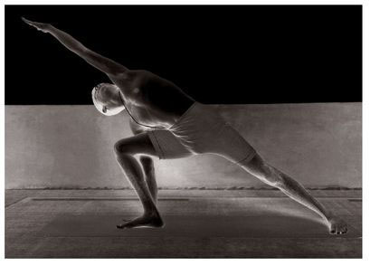

This asana has five vinyasas, of which the 2nd and 4th constitute the states of the asana (see figure). Rechaka and puraka should follow the method described for earlier asanas.
METHOD
For this asana, jump the legs open to the right, doing puraka, and stand with the legs as much as five feet apart, as in Trikonasana, stretching out the arms tightly at the level of the chest, and swelling the chest. Then, doing rechaka , turn the right foot out, bend the knee completely, place the right hand by the side of the right foot, stretch the left arm straight out over the ear, and gaze at the fingertips; this is the 2nd vinyasa, which is the state of the asana and during which puraka and rechaka should be done as much as possible. Then, doing puraka, return to the position of the 1st vinyasa; this is the 3rd vinyasa. Then, as with the right leg and doing rechaka, repeat above for the left leg; this is the 4th vinyasa. Next, doing puraka, return to the position of the 1st vinyasa; this is the 5th vinyasa. Then come to Samasthiti.
In the 2nd and 4th vinyasas, which are the states of this asana, the body should be held tightly, and rechaka and puraka done slowly and as much as possible. Indeed, in whatever asana, aspirants should not forget to perform rechaka and puraka slowly and as much as possible while in the asana’s state.
BENEFITS
Utthita Parshvakonasana purifies the ribs and lower abdomen, dissolves the bad fat at the waist, and softens the limbs so that subsequent asanas can be more easily practiced.
UTTHITA PARSHVAKONASANA
